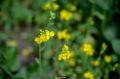

zhzqq0072017-05-29 23:234.5 分
操作性 4.50耐用性 4.50性价比 4.50解像力 4.50色彩还原 4.50机械结构 4.50
zhzqq0072017-05-29 23:22
zhzqq0072017-04-19 20:46
zhzqq0072017-04-14 01:16
塬边之树2015-03-16 11:214.58 分
操作性 4.00耐用性 5.00性价比 5.00解像力 4.50色彩还原 4.50机械结构 4.50

luminal2014-11-29 10:464.5 分
操作性 4.00耐用性 5.00性价比 5.00解像力 4.50色彩还原 4.50机械结构 4.00
盛世斜阳2012-12-27 15:384.83 分
操作性 5.00耐用性 5.00性价比 5.00解像力 4.50色彩还原 4.50机械结构 5.00
晒森2012-01-01 17:31
晒森2012-01-01 17:104.08 分
操作性 4.00耐用性 4.50性价比 5.00解像力 3.50色彩还原 3.50机械结构 4.00